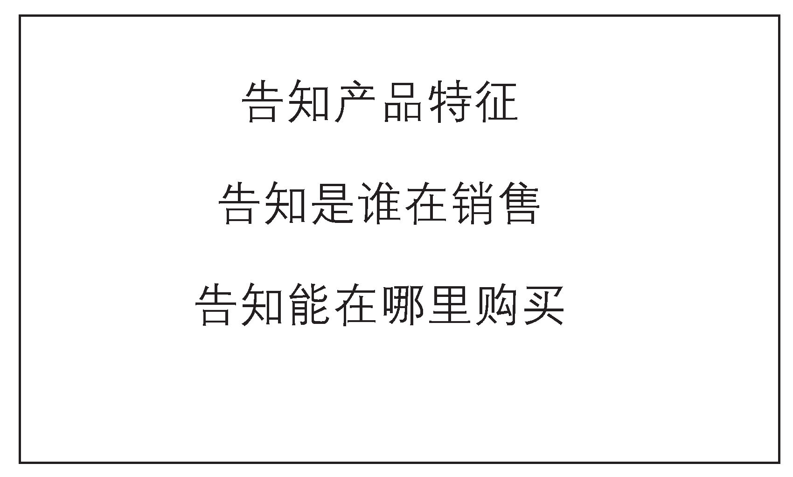
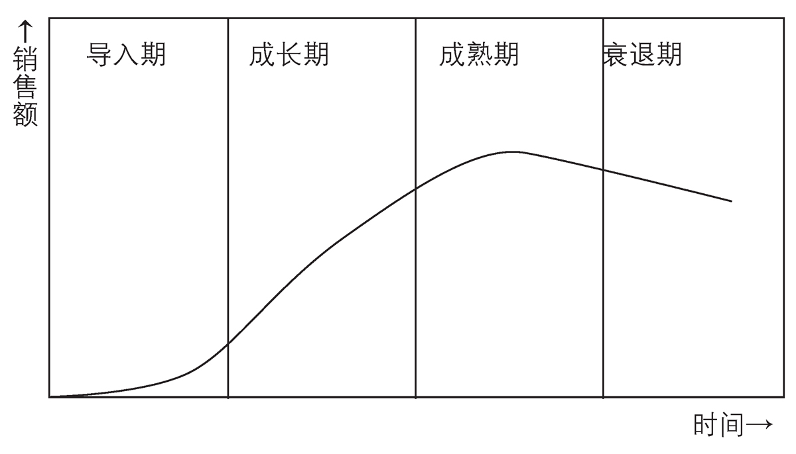
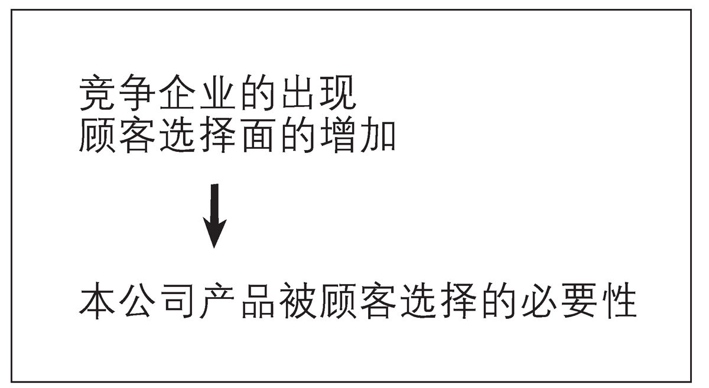

第2章 学习基本理论①（市场营销1.0）
1．市场营销的序幕（市场营销1.0）
从福特公司的市场营销来看市场营销1.0
"市场营销这一概念究竟是从何时出现的？"这个问题很难回答，但从学术方面来说，1950年的俄亥俄州立大学商学院课程已经有了名为"市场营销"的科目。而当时的市场营销被定义为"商人从事生产活动或创造经济生产力时的正当手段"。
这是否与您对现代市场营销观的印象有所不同呢？因为当时的市场还处于商业=生产活动的阶段。
那么企业所创造的战略性市场营销究竟是怎样的呢？这里以1908年登场的世界性汽车T型福特车为例来进行分析。
福特公司虽然制造了各种类型的汽车，但T型福特车的诞生还是彻底改变了企业状态。通过强化在当时完成度极高的T型福特车的生产，公司获得了成本上的收益，成本性价比也成为推广性高的汽车代名词，席卷了全美。
在当时的状况下，福特公司甚至抛出了有名的台词"You can have any colour you want as long as it's black（你可以选择任何你想要的颜色，只要它是黑色）"。从这句话中可以看出在那个时代中，持有产品的企业方对顾客是如何强势。
T型福特车作为马车的代替品逐渐被人们接受。它毫无疑问比马更为方便，只要加满汽油就能运作，所以即使是拥有马匹的人也想购买。至今我们依旧用"马力"来表现汽车性能，也是当时传承下来的称呼。
正因为处于这种时期，所以作为T型福特车的销售方，只要生产出来横竖都能卖得掉，销售就像是往干燥的沙漠中注水一样 轻而易举。
因此当时的福特公司的市场营销活动也遵从了这一原则。企业强调T型福特是所谓的car（汽车），也就是新的horse（马），夜以继日地生产，一味扩大和占有市场。
"You only think you need a faster horse．（你只需要考虑自己需要一匹更快的马）"这一销售口号也是当时的T型福特车的广告标语，从中我们可以看出在销售T型福特车的时候，更重视宣传其为"马的代替品"而非"汽车"。
T型福特车的存在就是"马的代替品"，所以当时许多人并没有将"汽车"这一固有名词与T型福特车画上等号。这一事实对于熟悉近代市场营销的我们来说是否有些出乎意料呢？如果是我们的话，是否更希望将T型福特车作为"汽车"这一新品种推广而非仅仅作为"马的代替品"呢？
图表3 市场营销1.0的要点

在市场营销1.0中，重点是供给方的告知义务。有广泛而稳固的消费者只要了解产品特征就会花钱购买，因此该阶段最重要的就是迅速且毫无遗漏地对消费者传递情报。
但在马是人们生活中心的时代，要让他们理解"汽车"这一崭新的概念需要花费相当大的时间和精力。 从现在的眼光来看，
当时的时代条件下，信息传递手段非常有限，那么不用特意花费什么精力，直接将其称作是"马的代替品"反而更利于销售。所以市场营销活动毫不犹豫地将商品数量和物流放在首位，进行直线销售。因为无需考虑如何"将有限的资源发挥出最大利益"，所以这也是理所当然的做法。
图表4 产品生命周期

这里需要补充的是，当新产品推出市场时，一开始往往是作为代替品出售。
比如最近热销的智能手机最初也是作为普通手机和小型PC这类产品的代替品登场。此外，如果要举更为简单的例子的话，电饭煲曾是锅的替代品，洗衣机是洗衣板的替代品。
在替代品登场初期（也就是产品生命周期的导入期）是不会顾及消费者喜好的，它的全部作用就只是作为替代品而已。
事实上，1908年登场的T型福特作为马的替代品推出，通过注重数量和物流（市场营销1.0）很快就被人们当做便利的工具接受，在20年内都没有更换模型的必要。也就是说，最朴素 的黑色和以马车为原型的高顶棚车款连续销售了20年，累计达1500万台以上。从现在的角度来看，当时简直是个令人难以置信的环境。
而打破该记录的是德国大众汽车公司的Ⅰ型汽车，俗称甲壳虫汽车。它从T型福特车停止生产后的1938年起开始生产，一直持续到2003年，70年间共计出售2000万台。不过即使从这一点来看，在短短20年内就售出1500万台的T型福特车依旧是当之无愧的世界第一畅销车。
即使不进行市场营销也可以的状况能持续吗？
虽然T型福特车的例子是仅用于说明市场营销1.0的事例，但T型福特车登场的20世纪初期的美国并不是完全处于市场营销1.0的状况中。此外，无论在任何时代，只要处于市场经济发展途中，都存在市场营销1.0的状况。
这里最重要的是其规模的大小、持续期间的长短，并且新市场营销大多也是以该市场营销1.0的状况为原点出发的。 以此为基础，在T型福特车所创造的独占型市场背景下，现在的我们所熟悉的一切复杂市场营销都并没有什么存在的必要。
以日本为例，在1950年代，冰箱和洗衣机、电饭煲这三大家电曾被称作"三大神器"。在当时的状况下，销售商根本无需详细了解消费者的喜好，所以颜色几乎都是以白色为中心（也因此被称作白色家电）。而这种以大量生产并投放市场为中心的做法也与T型福特车的市场营销1.0环境类似。
2．市场营销1.0之后的路
市场营销的发展理由
正如各位所了解的一样，美国在历史上对移民十分宽容，因此在地理条件各异的广袤土地上居住着不同人种的人。他们在活跃于每个时代，作为消费者，在复杂的市场环境下为市场营销的进化做出了巨大贡献。
美国最初也如之前所列举的T型福特车一样，能持续约20年的朴素市场营销，哪怕只有单一的黑色车型也能不断提高销售额。
但随着市场的成熟化，这种做法在不知不觉间已经很难再继续扩大销量了。随后，T型福特车在售出1500万台后停止了生 产。为什么T型福特车后期难以继续延续辉煌了呢？
当人们产生这一疑问时，也就意味着市场营销开始迈向了2.0的道路。
我认为其理由大致分为两个方面。
其一是"市场本身饱和了"。当沙漠吸收水分的时期过去之后，市场上充满了T型福特车，日常生活中的车也变成了比马更常见的东西，于是"You only------------------"这句话不再通用。此外，随着人们喜好逐渐多元化，"You can have"------------------这句曾是T型福特车象征的名句也不再通用。
从产品生命周期上来说，它已经进入了"成熟期"，于是"只要生产出来就能卖掉"的时代宣告结束。
至于第二个原因，则是由于"竞争"的登场。T型福特车虽然是世界畅销车，但德国大众公司的I型（甲壳虫）却打破了它的销售数量。
也就是说，T型福特车逐渐开始被拿来与其他公司的产品进行比较，顾客站在了选择产品的立场上。而这种对商品的选择权则被企业称作"竞争"。
其中最具象征意义的是T型福特车被设定为"马的替代品"，而I型的通称为甲壳虫汽车，这显然证明了人们不再将汽车看做是马的代替品，正在寻求一种新的价值观。
而无论是福特公司还是大众公司，当他们开始考虑怎么做才能比其他企业卖出更多产品时，也就意味着其思维方式已经从之前最朴素的市场营销向更为复杂的高度市场营销------即市场营销2.0转换了。
3．竞争的加入成为2.0的导火索
在产品的导入期和成长期的初期阶段，单纯以降低价格来占有市场的做法比复杂而细致的市场营销更能带来商业利益是众所周知的事实，这也能以前述的T型福特车的事例来进行佐证。
比如福特公司其实也曾准备了T型福特车以外的BR型、S型和N型等高级车型，但品种的增加导致整体成本提升，而核心顾客却还处于汽车就只是汽车，对繁复的种类不感兴趣的阶段。于是福特公司最终决定将全部精力投放在T型车的生产上，这一朴素的战略在当时也是合理的，在此前提下以数量和低价取胜。因此大量生产和物流是初期阶段的关键所在。
用如今的常识性市场营销用语（概念）来说的话，即为3C分析中有两点即可。
图表5 市场营销1.0→2.0的要点

当竞争企业出现时，企业商品会被消费者拿来比较。而要让他们选择自己，则必须让本公司产品比其他公司更能吸引消费者，必须制造更能反映消费者希望的产品，更有效地向对本公司产品有兴趣的消费者传递情报，进行宣传。
所谓3C分析，是指对公司（Company）、顾客（Customer）和竞争（Competitor）的分析。换言之，就是只考虑公司与顾客之间的关系性就能售出T型福特车的状态。
从2C到3C分析的转换也就意味着竞争（Competitor）的登场，同时表明开始向市场营销2.0进化。
3C分析是通往市场营销2.0的入口
福特公司与大众公司、通用汽车公司等制造商形成了竞争（Competitor）。
这些厂商的登场意味着产品生命周期进入了成长期阶段。于是T型福特车自生产以来第一次被放在了与其他公司产品相比较的立场上。因此针对企业、顾客与竞争这三者的分析也成为了必然。
就这样，T型福特车陷入了不得不面对顾客评价的状态。这也是市场营销2.0的开端。
然而，已经习惯已有市场的主导者往往难以从消费者的视角去看待问题，也很难转换思维去做与之前截然不同的事。 另一方面，如通用汽车公司和大众公司这种后来者却为了与市场主导者一较高下而拼命寻找方法，反而更有可能比主导者们更快找到通往市场营销2.0的路。
在下一章将通过本田与哈雷公司来介绍北美二轮机车市场的市场营销事例。该事例作为市场营销2.0的典型事例经常被人提及，从中能学到市场营销是如何进化的，以及该进化为什么会发生等近现代市场营销相关的各种知识。